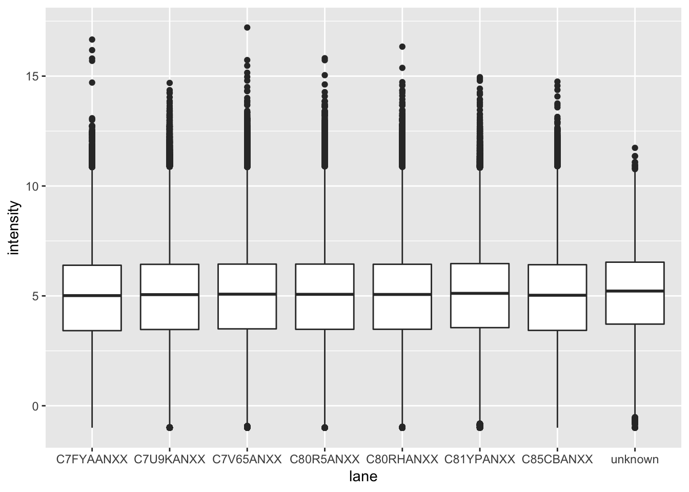
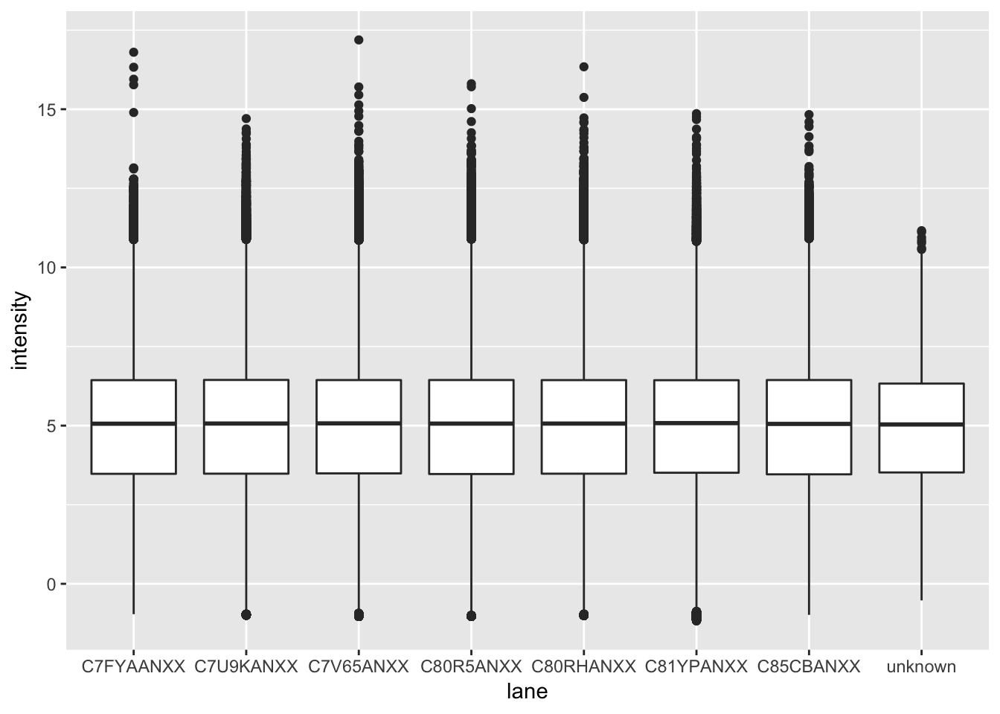
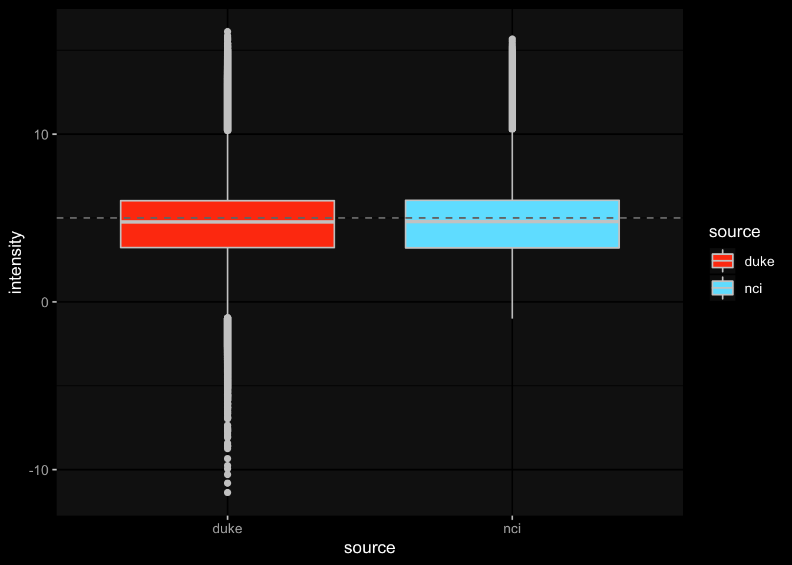

Merge Duke and NCI datasets
mleukam
2019-06-27
Last updated: 2019-07-02
Checks: 7 0
Knit directory: dlbcl_landscape/
This reproducible R Markdown analysis was created with workflowr (version 1.4.0). The Checks tab describes the reproducibility checks that were applied when the results were created. The Past versions tab lists the development history.
Great! Since the R Markdown file has been committed to the Git repository, you know the exact version of the code that produced these results.
Great job! The global environment was empty. Objects defined in the global environment can affect the analysis in your R Markdown file in unknown ways. For reproduciblity it’s best to always run the code in an empty environment.
The command set.seed(20190613) was run prior to running the code in the R Markdown file. Setting a seed ensures that any results that rely on randomness, e.g. subsampling or permutations, are reproducible.
Great job! Recording the operating system, R version, and package versions is critical for reproducibility.
Nice! There were no cached chunks for this analysis, so you can be confident that you successfully produced the results during this run.
Great job! Using relative paths to the files within your workflowr project makes it easier to run your code on other machines.
Great! You are using Git for version control. Tracking code development and connecting the code version to the results is critical for reproducibility. The version displayed above was the version of the Git repository at the time these results were generated.
Note that you need to be careful to ensure that all relevant files for the analysis have been committed to Git prior to generating the results (you can use wflow_publish or wflow_git_commit). workflowr only checks the R Markdown file, but you know if there are other scripts or data files that it depends on. Below is the status of the Git repository when the results were generated:
Ignored files:
Ignored: .DS_Store
Ignored: .Rhistory
Ignored: .Rproj.user/
Ignored: data/NIH_PDL1_amp_cases.csv
Ignored: data/NIH_PDL1_nonamp_cases.csv
Ignored: data/aliquot.tsv
Ignored: data/c2_human_immune_genesets.gmt
Ignored: data/dlbcl_total_immune_gset_v1_results.rds
Ignored: data/gdc_clinical_data.json
Ignored: data/gdc_files_and_case_ids.json
Ignored: data/gencode.v22.primary_assembly.annotation.gtf.geneinfo
Ignored: data/gset_ids_complete.rds
Ignored: data/htseq_counts/
Ignored: data/journal.pone.0088309.s001.XLS
Ignored: data/mmc1.xlsx
Ignored: data/nejmoa1801445_appendix_2.xlsx
Ignored: data/sample.tsv
Ignored: data/temp.dgelist_limma.rds
Ignored: output/combined_clin_data.xlsx
Ignored: output/dlbcl_expr_matrix.csv
Ignored: output/duke_expression_set_cleaned_log.rds
Ignored: output/duke_expressionset.rds
Ignored: output/duke_expressionset_pext.rds
Ignored: output/duke_extended_pheno_data.csv
Ignored: output/expr_matrix.csv
Ignored: output/nci_dlbcl_annotation.csv
Ignored: output/nci_dlbcl_unprocessed_counts.csv
Ignored: output/nci_expressionset.rds
Ignored: output/nci_expressionset_pext.rds
Ignored: output/nci_extended_pheno_data.csv
Ignored: output/total_immune_gset_v1.rds
Untracked files:
Untracked: data/1-s2.0-S1074761316304320-mmc2.xlsx
Untracked: data/41591_2018_45_MOESM5_ESM.xlsx
Untracked: data/azizi_curated.xlsx
Untracked: data/ds_JCO.18.01583-2.xlsx
Untracked: data/sig.rda
Untracked: data/~$1-s2.0-S1074761316304320-mmc2.xlsx
Untracked: output/combined_dlbcl_expr_matrix.csv
Untracked: output/gset_ids_complete_2.rds
Note that any generated files, e.g. HTML, png, CSS, etc., are not included in this status report because it is ok for generated content to have uncommitted changes.
These are the previous versions of the R Markdown and HTML files. If you’ve configured a remote Git repository (see ?wflow_git_remote), click on the hyperlinks in the table below to view them.
| File | Version | Author | Date | Message |
|---|---|---|---|---|
| Rmd | 8ec17b0 | mleukam | 2019-07-02 | new gene sets for take 2 GSVA |
| html | 10b3bdd | mleukam | 2019-06-30 | Build site. |
| Rmd | d971842 | mleukam | 2019-06-30 | working notebook for merging expression and phenotype |
| html | 5a57ec0 | mleukam | 2019-06-28 | Build site. |
The purpose of this notebook is to merge the RNAseq data from NCI (downloaded as raw counts from GDC) and Duke (processed from sequence data) into a single gene expression matrix.
Setup
Clear workspace
rm(list = ls())Load packages
library("tidyverse")── Attaching packages ─────────────────────────────── tidyverse 1.2.1 ──✔ ggplot2 3.1.1 ✔ purrr 0.3.2
✔ tibble 2.1.3 ✔ dplyr 0.8.1
✔ tidyr 0.8.3 ✔ stringr 1.4.0
✔ readr 1.3.1 ✔ forcats 0.4.0── Conflicts ────────────────────────────────── tidyverse_conflicts() ──
✖ dplyr::filter() masks stats::filter()
✖ dplyr::lag() masks stats::lag()library("sva")Loading required package: mgcvLoading required package: nlme
Attaching package: 'nlme'The following object is masked from 'package:dplyr':
collapseThis is mgcv 1.8-28. For overview type 'help("mgcv-package")'.Loading required package: genefilter
Attaching package: 'genefilter'The following object is masked from 'package:readr':
specLoading required package: BiocParallellibrary("Biobase")Loading required package: BiocGenericsLoading required package: parallel
Attaching package: 'BiocGenerics'The following objects are masked from 'package:parallel':
clusterApply, clusterApplyLB, clusterCall, clusterEvalQ,
clusterExport, clusterMap, parApply, parCapply, parLapply,
parLapplyLB, parRapply, parSapply, parSapplyLBThe following objects are masked from 'package:dplyr':
combine, intersect, setdiff, unionThe following objects are masked from 'package:stats':
IQR, mad, sd, var, xtabsThe following objects are masked from 'package:base':
anyDuplicated, append, as.data.frame, basename, cbind,
colMeans, colnames, colSums, dirname, do.call, duplicated,
eval, evalq, Filter, Find, get, grep, grepl, intersect,
is.unsorted, lapply, lengths, Map, mapply, match, mget, order,
paste, pmax, pmax.int, pmin, pmin.int, Position, rank, rbind,
Reduce, rowMeans, rownames, rowSums, sapply, setdiff, sort,
table, tapply, union, unique, unsplit, which, which.max,
which.minWelcome to Bioconductor
Vignettes contain introductory material; view with
'browseVignettes()'. To cite Bioconductor, see
'citation("Biobase")', and for packages 'citation("pkgname")'.Read in expressionsets
duke_es <- readRDS("output/duke_expressionset_pext.rds")
nci_es <- readRDS("output/nci_expressionset_pext.rds")Batch correction Duke expression data
Following examples and suggestions in vignette here: https://bioconductor.org/packages/release/bioc/vignettes/sva/inst/doc/sva.pdf and examples here: http://jtleek.com/genstats/inst/doc/02_13_batch-effects.html
Duke expression data did not go through GDC pipeline and may contain batch effects carried over from raw sequence data. Duke pheno data includes lanes, which will be examined for batch effect using SVA ComBat function
pheno <- pData(duke_es)
edata <- exprs(duke_es)
# There is a single "NA" value in the lane assignments. Will review and decide whether to keep or not for further analysis
which(is.na(pheno$lane))[1] 214pheno[214,] lib_size lane Gender IPI IPI groups ECOG IPI AnnArbor stage IPI
duke_2699 11074556 <NA> F 4 High 0 1
LDH IPI multiple extranodal IPI AGE IPI B symptoms at diagnosis
duke_2699 1 1 1 no
Response to initial therapy Testicular involvement
duke_2699 Complete response Female
CNS Involvement CNS Relapse age at diagnosis
duke_2699 no no 83.8
Overall Survival years Censored log2 MYC expr log2 BCL2 expr
duke_2699 0.97 0 4.77914 5.931078
log2 BCL6 expr MYC high expr BCL2 high expr BCL6 high expr
duke_2699 4.529577 0 0 0
MYC IHC BCL2 IHC BCL6 IHC BCL2 translocation (FISH)
duke_2699 <NA> positive positive <NA>
MYC translocation (FISH) BCL6 translocation (FISH)
duke_2699 <NA> <NA>
ABC GCB (RNAseq) ABC GCB ratio (RNAseq) Nanostring ABC GCB
duke_2699 ABC 0.4032663 <NA>
Nanostring LPS Hans GCB NonGCB Genomic Risk Model
duke_2699 NA GCB High risk# The sample looks otherwise complete and with a large enough library size compared to others (though small overall). Will set to "unknown" and keep. Because one batch now will only have one member, will have to adjust means only and not variance (cannot calculate variance from one sample)
# The ComBat function adjusts for known batches using an empirical Bayesian framework. In order to use the function, you must have a known batch variable in your dataset.
batch = pheno$lane %>% as.data.frame() %>%
dplyr::rename(lane = 1) %>%
mutate(lane = as.character(lane)) %>%
replace(is.na(.), "unknown") %>%
mutate(lane = as.factor(lane)) %>%
pull(lane)
summary(batch)C7FYAANXX C7U9KANXX C7V65ANXX C80R5ANXX C80RHANXX C81YPANXX C85CBANXX
32 130 132 134 137 53 46
unknown
1 # Note that adjustment variables will be treated as given to the ComBat function. This means if you are trying to adjust for a categorical variable with p different levels, you will need to give ComBat p-1 indicator variables for this covariate.
modlane <- model.matrix(~ lane, data = pheno)
# We need to create a model matrix for the adjustment variables, including the variable of interest. Note that you do not include batch in creating this model matrix - it will be included later in the ComBat function. In this case there are no other adjustment variables so we simply fit an intercept term.
modcombat <- model.matrix(~ 1, data = pheno)
# apply combat to get "cleaned data matrix"
# will use the mean.only=TRUE option for correction for lanes that only adjusts the mean of the batch effects across batches (default adjusts the mean and variance). This option is recommended for cases where milder batch effects are expected (so no need to adjust the variance), or in cases where the variances are expected to be different across batches due to the biology.
# plot the before
batch_df <- enframe(batch) %>%
dplyr::select(lane = value)
edata_df <- as.data.frame(t(edata)) %>%
rownames_to_column(var = "sample_id") %>%
as_tibble() %>%
bind_cols(batch_df) %>%
dplyr::select(sample_id, lane, everything()) %>%
gather(key = "gene_id", value = "intensity", -sample_id, -lane) %>%
group_by(lane) %>%
print()# A tibble: 8,255,310 x 4
# Groups: lane [8]
sample_id lane gene_id intensity
<chr> <fct> <chr> <dbl>
1 duke_648 C85CBANXX ENSG00000000003.13 1.58
2 duke_658 C80RHANXX ENSG00000000003.13 2.24
3 duke_683 C80RHANXX ENSG00000000003.13 2.76
4 duke_684 C85CBANXX ENSG00000000003.13 0.728
5 duke_689 C85CBANXX ENSG00000000003.13 3.27
6 duke_690 C85CBANXX ENSG00000000003.13 4.37
7 duke_695 C85CBANXX ENSG00000000003.13 0.873
8 duke_704 C85CBANXX ENSG00000000003.13 -1
9 duke_705 C85CBANXX ENSG00000000003.13 2.71
10 duke_759 C85CBANXX ENSG00000000003.13 1.64
# … with 8,255,300 more rowsbefore_box <- ggplot(edata_df, aes(x = lane, y = intensity, group = lane)) +
geom_boxplot()
before_box
| Version | Author | Date |
|---|---|---|
| 10b3bdd | mleukam | 2019-06-30 |
# pretty minimal differences in mean and distribution
# apply batch correction
combat_edata <- ComBat(dat = edata,
batch = batch,
mod = modcombat,
mean.only = TRUE,
par.prior = TRUE,
prior.plots = FALSE)Using the 'mean only' version of ComBatFound8batchesNote: one batch has only one sample, setting mean.only=TRUEAdjusting for0covariate(s) or covariate level(s)Standardizing Data across genesFitting L/S model and finding priorsFinding parametric adjustmentsAdjusting the Data# plot the after
batch_df <- enframe(batch) %>%
dplyr::select(lane = value)
combat_edata_df <- as.data.frame(t(combat_edata)) %>%
rownames_to_column(var = "sample_id") %>%
as_tibble() %>%
bind_cols(batch_df) %>%
dplyr::select(sample_id, lane, everything()) %>%
gather(key = "gene_id", value = "intensity", -sample_id, -lane) %>%
group_by(lane) %>%
print()# A tibble: 8,255,310 x 4
# Groups: lane [8]
sample_id lane gene_id intensity
<chr> <fct> <chr> <dbl>
1 duke_648 C85CBANXX ENSG00000000003.13 1.62
2 duke_658 C80RHANXX ENSG00000000003.13 2.24
3 duke_683 C80RHANXX ENSG00000000003.13 2.76
4 duke_684 C85CBANXX ENSG00000000003.13 0.769
5 duke_689 C85CBANXX ENSG00000000003.13 3.31
6 duke_690 C85CBANXX ENSG00000000003.13 4.41
7 duke_695 C85CBANXX ENSG00000000003.13 0.914
8 duke_704 C85CBANXX ENSG00000000003.13 -0.959
9 duke_705 C85CBANXX ENSG00000000003.13 2.76
10 duke_759 C85CBANXX ENSG00000000003.13 1.68
# … with 8,255,300 more rowsafter_box <- ggplot(combat_edata_df, aes(x = lane, y = intensity, group = lane)) +
geom_boxplot()
after_box
| Version | Author | Date |
|---|---|---|
| 10b3bdd | mleukam | 2019-06-30 |
# even more better :-)Combine expression data
Use Duke expression data that is batch-corrected for lanes
duke_exprs <- combat_edata %>%
as.data.frame() %>%
rownames_to_column(var = "gene_id") %>%
as_tibble() %>%
dplyr::select(gene_id, everything()) %>%
print()# A tibble: 12,414 x 666
gene_id duke_648 duke_658 duke_683 duke_684 duke_689 duke_690 duke_695
<chr> <dbl> <dbl> <dbl> <dbl> <dbl> <dbl> <dbl>
1 ENSG00… 1.62 2.24 2.76 0.769 3.31 4.41 0.914
2 ENSG00… 6.14 6.05 4.10 5.54 4.41 5.56 5.82
3 ENSG00… 5.03 4.66 5.43 5.08 5.06 5.75 5.81
4 ENSG00… 6.53 6.42 5.89 6.66 5.53 8.18 5.68
5 ENSG00… 5.13 4.32 4.99 3.23 3.86 3.86 3.00
6 ENSG00… 7.44 6.45 6.62 4.40 5.91 7.28 2.84
7 ENSG00… 4.64 4.78 5.06 4.33 4.78 4.65 3.39
8 ENSG00… 6.11 6.51 6.50 5.29 5.65 6.47 6.26
9 ENSG00… 6.88 6.70 6.65 6.27 6.88 7.23 6.73
10 ENSG00… 3.59 2.88 2.39 1.58 2.06 4.07 2.35
# … with 12,404 more rows, and 658 more variables: duke_704 <dbl>,
# duke_705 <dbl>, duke_759 <dbl>, duke_787 <dbl>, duke_793 <dbl>,
# duke_799 <dbl>, duke_800 <dbl>, duke_813 <dbl>, duke_816 <dbl>,
# duke_823 <dbl>, duke_829 <dbl>, duke_830 <dbl>, duke_831 <dbl>,
# duke_1008 <dbl>, duke_1016 <dbl>, duke_2043 <dbl>, duke_2044 <dbl>,
# duke_2045 <dbl>, duke_2046 <dbl>, duke_2047 <dbl>, duke_2048 <dbl>,
# duke_2057 <dbl>, duke_2060 <dbl>, duke_2072 <dbl>, duke_2074 <dbl>,
# duke_2075 <dbl>, duke_2076 <dbl>, duke_2079 <dbl>, duke_2080 <dbl>,
# duke_2081 <dbl>, duke_2084 <dbl>, duke_2085 <dbl>, duke_2087 <dbl>,
# duke_2088 <dbl>, duke_2089 <dbl>, duke_2091 <dbl>, duke_2092 <dbl>,
# duke_2093 <dbl>, duke_2095 <dbl>, duke_2097 <dbl>, duke_2110 <dbl>,
# duke_2112 <dbl>, duke_2114 <dbl>, duke_2115 <dbl>, duke_2121 <dbl>,
# duke_2122 <dbl>, duke_2125 <dbl>, duke_2126 <dbl>, duke_2128 <dbl>,
# duke_2130 <dbl>, duke_2141 <dbl>, duke_2142 <dbl>, duke_2144 <dbl>,
# duke_2145 <dbl>, duke_2146 <dbl>, duke_2147 <dbl>, duke_2150 <dbl>,
# duke_2153 <dbl>, duke_2154 <dbl>, duke_2155 <dbl>, duke_2159 <dbl>,
# duke_2160 <dbl>, duke_2190 <dbl>, duke_2191 <dbl>, duke_2192 <dbl>,
# duke_2193 <dbl>, duke_2194 <dbl>, duke_2196 <dbl>, duke_2199 <dbl>,
# duke_2205 <dbl>, duke_2206 <dbl>, duke_2209 <dbl>, duke_2210 <dbl>,
# duke_2211 <dbl>, duke_2213 <dbl>, duke_2214 <dbl>, duke_2217 <dbl>,
# duke_2219 <dbl>, duke_2220 <dbl>, duke_2221 <dbl>, duke_2223 <dbl>,
# duke_2224 <dbl>, duke_2225 <dbl>, duke_2226 <dbl>, duke_2228 <dbl>,
# duke_2229 <dbl>, duke_2230 <dbl>, duke_2232 <dbl>, duke_2233 <dbl>,
# duke_2234 <dbl>, duke_2235 <dbl>, duke_2242 <dbl>, duke_2243 <dbl>,
# duke_2244 <dbl>, duke_2247 <dbl>, duke_2248 <dbl>, duke_2249 <dbl>,
# duke_2250 <dbl>, duke_2251 <dbl>, duke_2252 <dbl>, …nci_exprs <- exprs(nci_es) %>%
as.data.frame() %>%
rownames_to_column(var = "gene_id") %>%
as_tibble() %>%
dplyr::select(gene_id, everything()) %>%
print()# A tibble: 12,858 x 482
gene_id DLBCL11667 DLBCL10501 DLBCL10954 DLBCL10984 DLBCL11206
<chr> <dbl> <dbl> <dbl> <dbl> <dbl>
1 ENSG00… 1.02 2.20 1.69 1.71 3.77
2 ENSG00… 5.05 6.17 4.92 5.53 5.69
3 ENSG00… 2.50 2.83 5.02 4.98 4.85
4 ENSG00… 2.42 4.56 4.44 4.30 4.50
5 ENSG00… 4.66 5.02 5.62 6.52 5.95
6 ENSG00… 4.43 5.67 5.47 5.28 5.71
7 ENSG00… 4.69 4.65 6.04 5.41 5.81
8 ENSG00… 3.95 5.25 6.00 5.85 6.16
9 ENSG00… 4.77 6.47 5.80 6.06 5.74
10 ENSG00… 2.40 3.42 4.14 3.40 3.96
# … with 12,848 more rows, and 476 more variables: DLBCL10959 <dbl>,
# DLBCL10985 <dbl>, DLBCL11533 <dbl>, DLBCL11519 <dbl>,
# DLBCL10921 <dbl>, DLBCL11462 <dbl>, DLBCL10960 <dbl>,
# DLBCL10943 <dbl>, DLBCL11503 <dbl>, DLBCL11674 <dbl>,
# DLBCL10969 <dbl>, DLBCL11481 <dbl>, DLBCL10946 <dbl>,
# DLBCL11538 <dbl>, DLBCL11000 <dbl>, DLBCL10972 <dbl>,
# DLBCL11537 <dbl>, DLBCL10902 <dbl>, DLBCL10555 <dbl>,
# DLBCL10918 <dbl>, DLBCL11573 <dbl>, DLBCL11559 <dbl>,
# DLBCL11590 <dbl>, DLBCL11528 <dbl>, DLBCL10881 <dbl>,
# DLBCL10539 <dbl>, DLBCL10890 <dbl>, DLBCL11571 <dbl>,
# DLBCL10945 <dbl>, DLBCL11456 <dbl>, DLBCL11517 <dbl>,
# DLBCL11474 <dbl>, DLBCL11492 <dbl>, DLBCL10924 <dbl>,
# DLBCL11208 <dbl>, DLBCL10899 <dbl>, DLBCL11575 <dbl>,
# DLBCL11353 <dbl>, DLBCL11495 <dbl>, DLBCL11180 <dbl>,
# DLBCL10466 <dbl>, DLBCL10529 <dbl>, DLBCL11181 <dbl>,
# DLBCL11261 <dbl>, DLBCL11441 <dbl>, DLBCL10116 <dbl>,
# DLBCL10478 <dbl>, DLBCL10986 <dbl>, DLBCL10862 <dbl>,
# DLBCL11454 <dbl>, DLBCL11428 <dbl>, DLBCL11196 <dbl>,
# DLBCL10534 <dbl>, DLBCL10515 <dbl>, DLBCL10965 <dbl>,
# DLBCL10462 <dbl>, DLBCL11259 <dbl>, DLBCL11576 <dbl>,
# DLBCL11439 <dbl>, DLBCL10967 <dbl>, DLBCL10917 <dbl>,
# DLBCL11448 <dbl>, DLBCL11512 <dbl>, DLBCL11662 <dbl>,
# DLBCL10873 <dbl>, DLBCL10538 <dbl>, DLBCL11685 <dbl>,
# DLBCL10893 <dbl>, DLBCL11508 <dbl>, DLBCL10992 <dbl>,
# DLBCL10545 <dbl>, DLBCL10915 <dbl>, DLBCL11657 <dbl>,
# DLBCL10496 <dbl>, DLBCL11191 <dbl>, DLBCL10864 <dbl>,
# DLBCL11535 <dbl>, DLBCL10502 <dbl>, DLBCL10492 <dbl>,
# DLBCL10876 <dbl>, DLBCL10500 <dbl>, DLBCL11677 <dbl>,
# DLBCL10835 <dbl>, DLBCL11490 <dbl>, DLBCL10896 <dbl>,
# DLBCL10525 <dbl>, DLBCL11672 <dbl>, DLBCL10488 <dbl>,
# DLBCL10504 <dbl>, DLBCL11531 <dbl>, DLBCL10451 <dbl>,
# DLBCL10457 <dbl>, DLBCL11430 <dbl>, DLBCL11477 <dbl>,
# DLBCL11300 <dbl>, DLBCL10961 <dbl>, DLBCL11655 <dbl>,
# DLBCL11434 <dbl>, DLBCL11515 <dbl>, DLBCL10834 <dbl>, …# filter rownames to only keep intersecting rows
duke_genes <- duke_exprs %>% pull(gene_id)
length(duke_genes)[1] 12414nci_genes <- nci_exprs %>% pull(gene_id)
length(nci_genes)[1] 12858combined_genes <- intersect(duke_genes, nci_genes)
length(combined_genes)[1] 11589head(combined_genes)[1] "ENSG00000000003.13" "ENSG00000000419.11" "ENSG00000000457.12"
[4] "ENSG00000000460.15" "ENSG00000000938.11" "ENSG00000000971.14"duke_exprs_filt <- duke_exprs %>%
dplyr::filter(gene_id %in% combined_genes)
nrow(duke_exprs_filt)[1] 11589nci_exprs_filt <- nci_exprs %>%
dplyr::filter(gene_id %in% combined_genes)
nrow(nci_exprs_filt)[1] 11589combined_exprs <- nci_exprs_filt %>%
left_join(duke_exprs_filt, by = "gene_id") %>%
as.data.frame() %>%
column_to_rownames(var = "gene_id") %>%
as.matrix()
dim(combined_exprs)[1] 11589 1146combined_exprs[1:10, 1:6] DLBCL11667 DLBCL10501 DLBCL10954 DLBCL10984 DLBCL11206
ENSG00000000003.13 1.019206 2.195116 1.685073 1.707502 3.769356
ENSG00000000419.11 5.046223 6.174933 4.918027 5.525384 5.692592
ENSG00000000457.12 2.498051 2.826575 5.021139 4.976091 4.853732
ENSG00000000460.15 2.419497 4.559405 4.438914 4.295212 4.495919
ENSG00000000938.11 4.658678 5.023231 5.621220 6.517532 5.946991
ENSG00000000971.14 4.433347 5.672873 5.465547 5.279273 5.714483
ENSG00000001036.12 4.692478 4.652098 6.038982 5.409123 5.807434
ENSG00000001084.9 3.945681 5.245642 5.996167 5.847474 6.159070
ENSG00000001167.13 4.765752 6.470524 5.801230 6.062576 5.742934
ENSG00000001460.16 2.403260 3.415519 4.139625 3.403384 3.961123
DLBCL10959
ENSG00000000003.13 1.059588
ENSG00000000419.11 6.083286
ENSG00000000457.12 4.398922
ENSG00000000460.15 4.881210
ENSG00000000938.11 3.322795
ENSG00000000971.14 4.641812
ENSG00000001036.12 4.244619
ENSG00000001084.9 5.385279
ENSG00000001167.13 5.362371
ENSG00000001460.16 3.659892Combine phenotype data
Overlapping data (NCI = Duke)
Gene Expression Subgroup=ABC GCB (RNAseq)– no reformattingIPI range=IPI– NCI dataset split into two numbers and save both high and low IPI. Merge Duke data with low IPI (presumably at diagnosis?)IPI Group=IPI groups– no reformattingStatus at Follow_up_ 0 Alive_ 1 Dead=Censored– no reformattingFollow_up Time _yrs=Overall Survival years– no reformattingGender=GenderAge=Age at diagnosis- Duke dataset, remove decimals, removeage_at_diagnosisfrom NCI datasetann_arbor_clinical_stage=AnnArbor stage IPI- NCI dataset to be converted to numeric and then converted to indicator for stage 3/4 per IPIECOG Performance Status=ECOG IPI- NCI dataset to be converted to indicator for ECOG 2+ vs ECOG 0-1 per IPINumber of Extranodal Sites=multiple extranodal IPI- NCI dataset to be converted to indicator for >1 extranodal sitesLDH Ratio=LDH IPI- NCI dataset to be converted to indicator for raio >1 per IPI
# pull out pheno_data
nci_pheno <- pData(nci_es) %>%
rownames_to_column(var = "sample_id") %>%
as_tibble() %>%
print()# A tibble: 481 x 40
sample_id pdl1_status case_id filename project_id days_to_last_fo…
<chr> <chr> <chr> <chr> <chr> <dbl>
1 DLBCL116… non-amplif… 3e164d… b384270… NCICCR-DL… 633
2 DLBCL105… non-amplif… 678acb… ab3f958… NCICCR-DL… 674
3 DLBCL109… non-amplif… c1b07b… 92fbf68… NCICCR-DL… 425
4 DLBCL109… low_amplif… 15b380… dc44d3b… NCICCR-DL… NA
5 DLBCL112… non-amplif… 7ac79d… 717d067… NCICCR-DL… 2299
6 DLBCL109… low_amplif… 94d33a… 9765c55… NCICCR-DL… NA
7 DLBCL109… non-amplif… fa7ae8… 93f0175… NCICCR-DL… NA
8 DLBCL115… non-amplif… 18134e… cd23ffe… NCICCR-DL… 3461
9 DLBCL115… low_amplif… 3fe9ec… 03cb176… NCICCR-DL… NA
10 DLBCL109… non-amplif… b31ef3… bd2bf78… NCICCR-DL… NA
# … with 471 more rows, and 34 more variables: updated_datetime <dttm>,
# tumor_stage <chr>, age_at_diagnosis <dbl>,
# tissue_or_organ_of_origin <chr>, ann_arbor_clinical_stage <chr>,
# progression_or_recurrence <chr>, last_known_disease_status <chr>,
# primary_diagnosis <chr>, tumor_grade <chr>, demographic.gender <chr>,
# demographic.submitter_id <chr>, demographic.race <chr>,
# demographic.ethnicity <chr>, demographic.vital_status <chr>,
# size <dbl>, `dbGaP accession` <chr>, Diagnosis <chr>, `Gene Expression
# Subgroup` <chr>, `Genetic Subtype` <chr>, `Biopsy Type` <chr>,
# Treatment__ <chr>, Gender <chr>, Age <dbl>, `Ann Arbor Stage` <dbl>,
# `LDH Ratio` <dbl>, `ECOG Performance Status` <dbl>, `Number of
# Extranodal Sites` <dbl>, `IPI Group` <chr>, `IPI Range` <dbl>, `Status
# at Follow_up_ 0 Alive_ 1 Dead` <dbl>, `Follow_up Time _yrs` <dbl>,
# `Progression_Free Survival _PFS_ Status_ 0 No Progressoin_ 1
# Progression` <dbl>, `Progression_Free Survival _PFS_ Time _yrs` <dbl>,
# `Included in Survival Analysis` <chr>duke_pheno <- pData(duke_es) %>%
rownames_to_column(var = "sample_id") %>%
as_tibble() %>%
print()# A tibble: 665 x 37
sample_id lib_size lane Gender IPI `IPI groups` `ECOG IPI`
<chr> <int> <fct> <chr> <dbl> <chr> <dbl>
1 duke_648 7664005 C85C… F 3 Medium 0
2 duke_658 13270245 C80R… M NA <NA> NA
3 duke_683 8620210 C80R… M 3 Medium 1
4 duke_684 5512745 C85C… F 1 Low 0
5 duke_689 8874451 C85C… F 3 Medium 0
6 duke_690 9633770 C85C… M 0 Low 0
7 duke_695 8313974 C85C… F 2 Medium 1
8 duke_704 399772 C85C… F 1 Low 0
9 duke_705 4856641 C85C… M 4 High 1
10 duke_759 5364952 C85C… M 2 Medium 0
# … with 655 more rows, and 30 more variables: `AnnArbor stage IPI` <dbl>,
# `LDH IPI` <dbl>, `multiple extranodal IPI` <dbl>, `AGE IPI` <dbl>, `B
# symptoms at diagnosis` <chr>, `Response to initial therapy` <chr>,
# `Testicular involvement` <chr>, `CNS Involvement` <chr>, `CNS
# Relapse` <chr>, `age at diagnosis` <dbl>, `Overall Survival
# years` <dbl>, Censored <dbl>, `log2 MYC expr` <dbl>, `log2 BCL2
# expr` <dbl>, `log2 BCL6 expr` <dbl>, `MYC high expr` <dbl>, `BCL2 high
# expr` <dbl>, `BCL6 high expr` <dbl>, `MYC IHC` <chr>, `BCL2
# IHC` <chr>, `BCL6 IHC` <chr>, `BCL2 translocation (FISH)` <chr>, `MYC
# translocation (FISH)` <chr>, `BCL6 translocation (FISH)` <chr>, `ABC
# GCB (RNAseq)` <chr>, `ABC GCB ratio (RNAseq)` <dbl>, `Nanostring ABC
# GCB` <chr>, `Nanostring LPS` <dbl>, `Hans GCB NonGCB` <chr>, `Genomic
# Risk Model` <chr>Format NCI data for merge
ipi_highlow <- nci_pheno$`IPI Range` %>%
str_split_fixed(pattern = "", n = 2) %>%
as_tibble() %>%
dplyr::rename(ipi_low = V1) %>%
mutate(ipi_high = ifelse(V2 == "", ipi_low, V2)) %>%
dplyr::select(-V2) %>%
print()Warning: `as_tibble.matrix()` requires a matrix with column names or a `.name_repair` argument. Using compatibility `.name_repair`.
This warning is displayed once per session.# A tibble: 481 x 2
ipi_low ipi_high
<chr> <chr>
1 1 1
2 1 1
3 1 3
4 1 2
5 2 2
6 2 2
7 3 4
8 3 3
9 2 3
10 2 2
# … with 471 more rowsnci_pheno_ipi <- nci_pheno %>%
bind_cols(ipi_highlow) %>%
dplyr::select(sample_id, ipi_initial = ipi_low, ipi_high, everything()) %>%
print()# A tibble: 481 x 42
sample_id ipi_initial ipi_high pdl1_status case_id filename project_id
<chr> <chr> <chr> <chr> <chr> <chr> <chr>
1 DLBCL116… 1 1 non-amplif… 3e164d… b384270… NCICCR-DL…
2 DLBCL105… 1 1 non-amplif… 678acb… ab3f958… NCICCR-DL…
3 DLBCL109… 1 3 non-amplif… c1b07b… 92fbf68… NCICCR-DL…
4 DLBCL109… 1 2 low_amplif… 15b380… dc44d3b… NCICCR-DL…
5 DLBCL112… 2 2 non-amplif… 7ac79d… 717d067… NCICCR-DL…
6 DLBCL109… 2 2 low_amplif… 94d33a… 9765c55… NCICCR-DL…
7 DLBCL109… 3 4 non-amplif… fa7ae8… 93f0175… NCICCR-DL…
8 DLBCL115… 3 3 non-amplif… 18134e… cd23ffe… NCICCR-DL…
9 DLBCL115… 2 3 low_amplif… 3fe9ec… 03cb176… NCICCR-DL…
10 DLBCL109… 2 2 non-amplif… b31ef3… bd2bf78… NCICCR-DL…
# … with 471 more rows, and 35 more variables:
# days_to_last_follow_up <dbl>, updated_datetime <dttm>,
# tumor_stage <chr>, age_at_diagnosis <dbl>,
# tissue_or_organ_of_origin <chr>, ann_arbor_clinical_stage <chr>,
# progression_or_recurrence <chr>, last_known_disease_status <chr>,
# primary_diagnosis <chr>, tumor_grade <chr>, demographic.gender <chr>,
# demographic.submitter_id <chr>, demographic.race <chr>,
# demographic.ethnicity <chr>, demographic.vital_status <chr>,
# size <dbl>, `dbGaP accession` <chr>, Diagnosis <chr>, `Gene Expression
# Subgroup` <chr>, `Genetic Subtype` <chr>, `Biopsy Type` <chr>,
# Treatment__ <chr>, Gender <chr>, Age <dbl>, `Ann Arbor Stage` <dbl>,
# `LDH Ratio` <dbl>, `ECOG Performance Status` <dbl>, `Number of
# Extranodal Sites` <dbl>, `IPI Group` <chr>, `IPI Range` <dbl>, `Status
# at Follow_up_ 0 Alive_ 1 Dead` <dbl>, `Follow_up Time _yrs` <dbl>,
# `Progression_Free Survival _PFS_ Status_ 0 No Progressoin_ 1
# Progression` <dbl>, `Progression_Free Survival _PFS_ Time _yrs` <dbl>,
# `Included in Survival Analysis` <chr>nci_pheno_formatted <- nci_pheno_ipi %>%
dplyr::rename(abc_gcb_rna = `Gene Expression Subgroup`,
ipi_group = `IPI Group`,
os_status = `Status at Follow_up_ 0 Alive_ 1 Dead`,
os_years = `Follow_up Time _yrs`,
gender = Gender,
age = Age) %>%
dplyr::select(sample_id, abc_gcb_rna, ipi_group, os_status, os_years, gender, age, everything()) %>%
mutate(ann_arbor_stage_3plus = as.factor(ann_arbor_clinical_stage)) %>%
mutate(ann_arbor_stage_3plus = fct_recode(ann_arbor_stage_3plus,
"1" = "Stage III",
"1" = "Stage IV",
"0" = "Stage I",
"0" = "Stage II",
"NA" = "Not Reported")) %>%
dplyr::select(sample_id, ann_arbor_stage_3plus, everything()) %>%
mutate(ps_2plus = as.numeric(`ECOG Performance Status`)) %>%
mutate(ps_2plus = ifelse(ps_2plus > 1, 1, 0),
ps_2plus = as.factor(ps_2plus)) %>%
dplyr::select(sample_id, ps_2plus, everything()) %>%
mutate(extranodal_sites_2plus = as.numeric(`Number of Extranodal Sites`)) %>%
mutate(extranodal_sites_2plus = ifelse(extranodal_sites_2plus > 1, 1, 0)) %>%
dplyr::select(sample_id, extranodal_sites_2plus, everything()) %>%
mutate(extranodal_sites_2plus = as.factor(extranodal_sites_2plus)) %>%
mutate(ldh_abnormal = ifelse(`LDH Ratio` > 1, 1, 0),
ldh_abnormal = as.factor(ldh_abnormal),
ipi_initial = as.factor(ipi_initial)) %>%
dplyr::select(sample_id, ldh_abnormal, everything()) %>%
print()# A tibble: 481 x 46
sample_id ldh_abnormal extranodal_site… ps_2plus ann_arbor_stage…
<chr> <fct> <fct> <fct> <fct>
1 DLBCL116… 0 0 0 1
2 DLBCL105… 0 0 1 0
3 DLBCL109… 1 <NA> <NA> 0
4 DLBCL109… <NA> 0 0 0
5 DLBCL112… 0 0 1 0
6 DLBCL109… <NA> 0 <NA> 0
7 DLBCL109… 1 <NA> 1 1
8 DLBCL115… 1 0 1 1
9 DLBCL115… <NA> 0 1 1
10 DLBCL109… 1 0 1 0
# … with 471 more rows, and 41 more variables: abc_gcb_rna <chr>,
# ipi_group <chr>, os_status <dbl>, os_years <dbl>, gender <chr>,
# age <dbl>, ipi_initial <fct>, ipi_high <chr>, pdl1_status <chr>,
# case_id <chr>, filename <chr>, project_id <chr>,
# days_to_last_follow_up <dbl>, updated_datetime <dttm>,
# tumor_stage <chr>, age_at_diagnosis <dbl>,
# tissue_or_organ_of_origin <chr>, ann_arbor_clinical_stage <chr>,
# progression_or_recurrence <chr>, last_known_disease_status <chr>,
# primary_diagnosis <chr>, tumor_grade <chr>, demographic.gender <chr>,
# demographic.submitter_id <chr>, demographic.race <chr>,
# demographic.ethnicity <chr>, demographic.vital_status <chr>,
# size <dbl>, `dbGaP accession` <chr>, Diagnosis <chr>, `Genetic
# Subtype` <chr>, `Biopsy Type` <chr>, Treatment__ <chr>, `Ann Arbor
# Stage` <dbl>, `LDH Ratio` <dbl>, `ECOG Performance Status` <dbl>,
# `Number of Extranodal Sites` <dbl>, `IPI Range` <dbl>,
# `Progression_Free Survival _PFS_ Status_ 0 No Progressoin_ 1
# Progression` <dbl>, `Progression_Free Survival _PFS_ Time _yrs` <dbl>,
# `Included in Survival Analysis` <chr>Format Duke data for merge
duke_pheno_formatted <- duke_pheno %>%
dplyr::rename(abc_gcb_rna = `ABC GCB (RNAseq)`,
ipi_group = `IPI groups`,
os_status = `Censored`,
os_years = `Overall Survival years`,
gender = Gender) %>%
mutate(age = (str_split_fixed(`age at diagnosis`, "\\.", n = 2))[,1]) %>%
dplyr::select(sample_id, age, abc_gcb_rna, ipi_group, os_status, os_years, gender, everything()) %>%
dplyr::rename(ann_arbor_stage_3plus = `AnnArbor stage IPI`,
ps_2plus = `ECOG IPI`,
extranodal_sites_2plus = `multiple extranodal IPI`,
ldh_abnormal = `LDH IPI`,
ipi_initial = IPI) %>%
mutate(ps_2plus = as.factor(ps_2plus),
ann_arbor_stage_3plus = as.factor(ann_arbor_stage_3plus),
extranodal_sites_2plus = as.factor(extranodal_sites_2plus),
ldh_abnormal = as.factor(ldh_abnormal),
ipi_initial = as.factor(ipi_initial)) %>%
mutate(age = as.numeric(age)) %>%
print()# A tibble: 665 x 38
sample_id age abc_gcb_rna ipi_group os_status os_years gender lib_size
<chr> <dbl> <chr> <chr> <dbl> <dbl> <chr> <int>
1 duke_648 31 Unclassifi… Medium 1 0.59 F 7664005
2 duke_658 50 GCB <NA> NA NA M 13270245
3 duke_683 55 ABC Medium 1 2.62 M 8620210
4 duke_684 53 GCB Low 1 1.87 F 5512745
5 duke_689 15 ABC Medium 1 2.29 F 8874451
6 duke_690 51 Unclassifi… Low 1 2.83 M 9633770
7 duke_695 54 GCB Medium NA NA F 8313974
8 duke_704 79 ABC Low 1 4.1 F 399772
9 duke_705 89 GCB High 0 NA M 4856641
10 duke_759 57 ABC Medium 0 6.55 M 5364952
# … with 655 more rows, and 30 more variables: lane <fct>,
# ipi_initial <fct>, ps_2plus <fct>, ann_arbor_stage_3plus <fct>,
# ldh_abnormal <fct>, extranodal_sites_2plus <fct>, `AGE IPI` <dbl>, `B
# symptoms at diagnosis` <chr>, `Response to initial therapy` <chr>,
# `Testicular involvement` <chr>, `CNS Involvement` <chr>, `CNS
# Relapse` <chr>, `age at diagnosis` <dbl>, `log2 MYC expr` <dbl>, `log2
# BCL2 expr` <dbl>, `log2 BCL6 expr` <dbl>, `MYC high expr` <dbl>, `BCL2
# high expr` <dbl>, `BCL6 high expr` <dbl>, `MYC IHC` <chr>, `BCL2
# IHC` <chr>, `BCL6 IHC` <chr>, `BCL2 translocation (FISH)` <chr>, `MYC
# translocation (FISH)` <chr>, `BCL6 translocation (FISH)` <chr>, `ABC
# GCB ratio (RNAseq)` <dbl>, `Nanostring ABC GCB` <chr>, `Nanostring
# LPS` <dbl>, `Hans GCB NonGCB` <chr>, `Genomic Risk Model` <chr>Merge pheno data
combined_pheno <- nci_pheno_formatted %>%
bind_rows(duke_pheno_formatted) %>%
dplyr::select(sample_id, abc_gcb_rna, ipi_group, os_status, os_years, age, gender, ipi_initial, pdl1_status, everything())Warning in bind_rows_(x, .id): Unequal factor levels: coercing to characterWarning in bind_rows_(x, .id): binding character and factor vector,
coercing into character vector
Warning in bind_rows_(x, .id): binding character and factor vector,
coercing into character vectorRemake expressionset
pheno_data_df <- as.data.frame(combined_pheno) %>%
column_to_rownames(var = "sample_id")
v_metadata <- data.frame(
labelDescription = colnames(pheno_data_df),
row.names = colnames(pheno_data_df) )
phenoData <- new("AnnotatedDataFrame",
data = pheno_data_df,
varMetadata = v_metadata)
phenoDataAn object of class 'AnnotatedDataFrame'
rowNames: DLBCL11667 DLBCL10501 ... duke_3999 (1146 total)
varLabels: abc_gcb_rna ipi_group ... Genomic Risk Model (71
total)
varMetadata: labelDescriptionannotation <- as.character("Duke RNAseq counts derived from raw sequence data published by the Dave lab at Duke in Reddy et al Cell 2017. Quantified with Kallisto with reverse strand parameter, collected with tximport, filtered for only protein-coding genes, selected for cases with expression in >12,000 genes, converted to CPM, filtered out genes expressed less than 1 in half or more of cases, TMM normalized and log2-transformed. NCI RNAseq counts originally published by the Staudt lab at NCI in Schmitz et al NEJM 2018. Raw counts downloaded from GDC as HTseq counts, converted to CPM, filtered out genes expressed less than 1 in half or more of cases, TMM normalized and log2-transformed.")
# assemble expressionset
combined_es <- ExpressionSet(
assayData = combined_exprs,
phenoData = phenoData,
annotation = annotation)
combined_esExpressionSet (storageMode: lockedEnvironment)
assayData: 11589 features, 1146 samples
element names: exprs
protocolData: none
phenoData
sampleNames: DLBCL11667 DLBCL10501 ... duke_3999 (1146 total)
varLabels: abc_gcb_rna ipi_group ... Genomic Risk Model (71
total)
varMetadata: labelDescription
featureData: none
experimentData: use 'experimentData(object)'
Annotation: Duke RNAseq counts derived from raw sequence data published by the Dave lab at Duke in Reddy et al Cell 2017. Quantified with Kallisto with reverse strand parameter, collected with tximport, filtered for only protein-coding genes, selected for cases with expression in >12,000 genes, converted to CPM, filtered out genes expressed less than 1 in half or more of cases, TMM normalized and log2-transformed. NCI RNAseq counts originally published by the Staudt lab at NCI in Schmitz et al NEJM 2018. Raw counts downloaded from GDC as HTseq counts, converted to CPM, filtered out genes expressed less than 1 in half or more of cases, TMM normalized and log2-transformed. Batch correction between Duke/NCI
Following documentation as above
# create marker variable for Duke vs NCI in pheno data
pheno_df <- pData(combined_es) %>%
rownames_to_column(var = "sample_id") %>%
as_tibble() %>%
mutate(source = ifelse(grepl("duke_", sample_id),"duke","nci")) %>%
mutate(source = as.factor(source)) %>%
dplyr::select(sample_id, source, everything()) %>%
# also fix gcb_abc column factors
mutate(abc_gcb_rna = as.character(abc_gcb_rna)) %>%
mutate(abc_gcb_rna = ifelse(abc_gcb_rna == "Unclass", "Unclassified", abc_gcb_rna)) %>%
mutate(abc_gcb_rna = as.factor(abc_gcb_rna)) %>%
print()# A tibble: 1,146 x 73
sample_id source abc_gcb_rna ipi_group os_status os_years age gender
<chr> <fct> <fct> <chr> <dbl> <dbl> <dbl> <chr>
1 DLBCL116… nci GCB Low 1 1.73 48 F
2 DLBCL105… nci GCB Low 0 1.85 42 M
3 DLBCL109… nci ABC <NA> 1 1.16 47 M
4 DLBCL109… nci ABC <NA> 0 0 75 F
5 DLBCL112… nci Unclassifi… Intermed… 1 6.30 76 M
6 DLBCL109… nci ABC <NA> 0 0 41 M
7 DLBCL109… nci ABC <NA> 0 0 54 M
8 DLBCL115… nci GCB Intermed… 0 9.48 57 F
9 DLBCL115… nci GCB Intermed… 0 0 32 M
10 DLBCL109… nci ABC Intermed… 0 0 56 M
# … with 1,136 more rows, and 65 more variables: ipi_initial <fct>,
# pdl1_status <chr>, ldh_abnormal <fct>, extranodal_sites_2plus <fct>,
# ps_2plus <fct>, ann_arbor_stage_3plus <chr>, ipi_high <chr>,
# case_id <chr>, filename <chr>, project_id <chr>,
# days_to_last_follow_up <dbl>, updated_datetime <dttm>,
# tumor_stage <chr>, age_at_diagnosis <dbl>,
# tissue_or_organ_of_origin <chr>, ann_arbor_clinical_stage <chr>,
# progression_or_recurrence <chr>, last_known_disease_status <chr>,
# primary_diagnosis <chr>, tumor_grade <chr>, demographic.gender <chr>,
# demographic.submitter_id <chr>, demographic.race <chr>,
# demographic.ethnicity <chr>, demographic.vital_status <chr>,
# size <dbl>, `dbGaP accession` <chr>, Diagnosis <chr>, `Genetic
# Subtype` <chr>, `Biopsy Type` <chr>, Treatment__ <chr>, `Ann Arbor
# Stage` <dbl>, `LDH Ratio` <dbl>, `ECOG Performance Status` <dbl>,
# `Number of Extranodal Sites` <dbl>, `IPI Range` <dbl>,
# `Progression_Free Survival _PFS_ Status_ 0 No Progressoin_ 1
# Progression` <dbl>, `Progression_Free Survival _PFS_ Time _yrs` <dbl>,
# `Included in Survival Analysis` <chr>, lib_size <int>, lane <fct>,
# `AGE IPI` <dbl>, `B symptoms at diagnosis` <chr>, `Response to initial
# therapy` <chr>, `Testicular involvement` <chr>, `CNS
# Involvement` <chr>, `CNS Relapse` <chr>, `age at diagnosis` <dbl>,
# `log2 MYC expr` <dbl>, `log2 BCL2 expr` <dbl>, `log2 BCL6 expr` <dbl>,
# `MYC high expr` <dbl>, `BCL2 high expr` <dbl>, `BCL6 high expr` <dbl>,
# `MYC IHC` <chr>, `BCL2 IHC` <chr>, `BCL6 IHC` <chr>, `BCL2
# translocation (FISH)` <chr>, `MYC translocation (FISH)` <chr>, `BCL6
# translocation (FISH)` <chr>, `ABC GCB ratio (RNAseq)` <dbl>,
# `Nanostring ABC GCB` <chr>, `Nanostring LPS` <dbl>, `Hans GCB
# NonGCB` <chr>, `Genomic Risk Model` <chr># convert back to regular dataframe with rownames for downstream processing
pheno_d <- as.data.frame(pheno_df) %>%
column_to_rownames(var = "sample_id")
# define batch as source marker
batch = pheno_df$source
summary(batch)duke nci
665 481 # boxplot by data source
# plot the before
batch_df <- enframe(batch) %>%
dplyr::select(source = value)
edata_df <- as.data.frame(t(exprs(combined_es))) %>%
rownames_to_column(var = "sample_id") %>%
as_tibble() %>%
bind_cols(batch_df) %>%
dplyr::select(sample_id, source, everything()) %>%
gather(key = "gene_id", value = "intensity", -sample_id, -source) %>%
group_by(source) %>%
print()# A tibble: 13,280,994 x 4
# Groups: source [2]
sample_id source gene_id intensity
<chr> <fct> <chr> <dbl>
1 DLBCL11667 nci ENSG00000000003.13 1.02
2 DLBCL10501 nci ENSG00000000003.13 2.20
3 DLBCL10954 nci ENSG00000000003.13 1.69
4 DLBCL10984 nci ENSG00000000003.13 1.71
5 DLBCL11206 nci ENSG00000000003.13 3.77
6 DLBCL10959 nci ENSG00000000003.13 1.06
7 DLBCL10985 nci ENSG00000000003.13 0.411
8 DLBCL11533 nci ENSG00000000003.13 2.57
9 DLBCL11519 nci ENSG00000000003.13 1.41
10 DLBCL10921 nci ENSG00000000003.13 2.47
# … with 13,280,984 more rowsbefore_box <- ggplot(edata_df, aes(x = source, y = intensity, group = source)) +
geom_boxplot()
before_box
| Version | Author | Date |
|---|---|---|
| 10b3bdd | mleukam | 2019-06-30 |
# small but norable differences in mean and distribution
# will use the NCI data as the "ground truth" for normalization given higher read counts overall and standardized count pipeline through GDC
# Note that adjustment variables will be treated as given to the ComBat function. This means if you are trying to adjust for a categorical variable with p different levels, you will need to give ComBat p-1 indicator variables for this covariate.
modsource <- model.matrix(~ source, data = pheno_d)
# We need to create a model matrix for the adjustment variables, including the variable of interest. Note that you do not include batch in creating this model matrix - it will be included later in the ComBat function. In this case there are no other adjustment variables so we simply fit an intercept term.
modcombat <- model.matrix(~ 1, data = pheno_d)
# apply batch correction
combined_combat_edata <- ComBat(dat = exprs(combined_es),
batch = batch,
mod = modcombat,
par.prior = TRUE,
prior.plots = FALSE,
mean.only = FALSE,
ref.batch = "nci")Using batch = nci as a reference batch (this batch won't change)Found2batchesAdjusting for0covariate(s) or covariate level(s)Standardizing Data across genesFitting L/S model and finding priorsFinding parametric adjustmentsAdjusting the Dataafter_df <- as.data.frame(t(combined_combat_edata)) %>%
rownames_to_column(var = "sample_id") %>%
as_tibble() %>%
bind_cols(batch_df) %>%
dplyr::select(sample_id, source, everything()) %>%
gather(key = "gene_id", value = "intensity", -sample_id, -source) %>%
group_by(source) %>%
print()# A tibble: 13,280,994 x 4
# Groups: source [2]
sample_id source gene_id intensity
<chr> <fct> <chr> <dbl>
1 DLBCL11667 nci ENSG00000000003.13 1.02
2 DLBCL10501 nci ENSG00000000003.13 2.20
3 DLBCL10954 nci ENSG00000000003.13 1.69
4 DLBCL10984 nci ENSG00000000003.13 1.71
5 DLBCL11206 nci ENSG00000000003.13 3.77
6 DLBCL10959 nci ENSG00000000003.13 1.06
7 DLBCL10985 nci ENSG00000000003.13 0.411
8 DLBCL11533 nci ENSG00000000003.13 2.57
9 DLBCL11519 nci ENSG00000000003.13 1.41
10 DLBCL10921 nci ENSG00000000003.13 2.47
# … with 13,280,984 more rowsafter_box <- ggplot(after_df,
aes(x = source, y = intensity, group = source)) +
geom_boxplot()
after_box
| Version | Author | Date |
|---|---|---|
| 10b3bdd | mleukam | 2019-06-30 |
Final Expressionset
# use updated pheno data frame from last chunk
v_metadata <- data.frame(
labelDescription = colnames(pheno_d),
row.names = colnames(pheno_d) )
phenoData <- new("AnnotatedDataFrame",
data = pheno_d,
varMetadata = v_metadata)
phenoDataAn object of class 'AnnotatedDataFrame'
rowNames: DLBCL11667 DLBCL10501 ... duke_3999 (1146 total)
varLabels: source abc_gcb_rna ... Genomic Risk Model (72 total)
varMetadata: labelDescriptionannotation <- as.character("Duke RNAseq counts derived from raw sequence data published by the Dave lab at Duke in Reddy et al Cell 2017. Quantified with Kallisto with reverse strand parameter, collected with tximport, filtered for only protein-coding genes, selected for cases with expression in >12,000 genes, converted to CPM, filtered out genes expressed less than 1 in half or more of cases, TMM normalized and log2-transformed. Batch corrected using ComBat by sequencing lane. NCI RNAseq counts originally published by the Staudt lab at NCI in Schmitz et al NEJM 2018. Raw counts downloaded from GDC as HTseq counts, converted to CPM, filtered out genes expressed less than 1 in half or more of cases, TMM normalized and log2-transformed. Batch corrected for NCI vs Duke source using ComBat")
# assemble expressionset
combined_es <- ExpressionSet(
assayData = combined_combat_edata,
phenoData = phenoData,
annotation = annotation)
combined_esExpressionSet (storageMode: lockedEnvironment)
assayData: 11589 features, 1146 samples
element names: exprs
protocolData: none
phenoData
sampleNames: DLBCL11667 DLBCL10501 ... duke_3999 (1146 total)
varLabels: source abc_gcb_rna ... Genomic Risk Model (72 total)
varMetadata: labelDescription
featureData: none
experimentData: use 'experimentData(object)'
Annotation: Duke RNAseq counts derived from raw sequence data published by the Dave lab at Duke in Reddy et al Cell 2017. Quantified with Kallisto with reverse strand parameter, collected with tximport, filtered for only protein-coding genes, selected for cases with expression in >12,000 genes, converted to CPM, filtered out genes expressed less than 1 in half or more of cases, TMM normalized and log2-transformed. Batch corrected using ComBat by sequencing lane. NCI RNAseq counts originally published by the Staudt lab at NCI in Schmitz et al NEJM 2018. Raw counts downloaded from GDC as HTseq counts, converted to CPM, filtered out genes expressed less than 1 in half or more of cases, TMM normalized and log2-transformed. Batch corrected for NCI vs Duke source using ComBat Write out for cluster
# write expression data as csv for large file transfer/reading on the cluster
combined_exprs <- exprs(combined_es)
combined_csv <- as.data.frame(combined_exprs) %>% rownames_to_column(var = "gene") %>% as_tibble() %>% select(gene, everything()) %>% print() # A tibble: 11,589 x 1,147
gene DLBCL11667 DLBCL10501 DLBCL10954 DLBCL10984 DLBCL11206 DLBCL10959
<chr> <dbl> <dbl> <dbl> <dbl> <dbl> <dbl>
1 ENSG… 1.02 2.20 1.69 1.71 3.77 1.06
2 ENSG… 5.05 6.17 4.92 5.53 5.69 6.08
3 ENSG… 2.50 2.83 5.02 4.98 4.85 4.40
4 ENSG… 2.42 4.56 4.44 4.30 4.50 4.88
5 ENSG… 4.66 5.02 5.62 6.52 5.95 3.32
6 ENSG… 4.43 5.67 5.47 5.28 5.71 4.64
7 ENSG… 4.69 4.65 6.04 5.41 5.81 4.24
8 ENSG… 3.95 5.25 6.00 5.85 6.16 5.39
9 ENSG… 4.77 6.47 5.80 6.06 5.74 5.36
10 ENSG… 2.40 3.42 4.14 3.40 3.96 3.66
# … with 11,579 more rows, and 1,140 more variables: DLBCL10985 <dbl>,
# DLBCL11533 <dbl>, DLBCL11519 <dbl>, DLBCL10921 <dbl>,
# DLBCL11462 <dbl>, DLBCL10960 <dbl>, DLBCL10943 <dbl>,
# DLBCL11503 <dbl>, DLBCL11674 <dbl>, DLBCL10969 <dbl>,
# DLBCL11481 <dbl>, DLBCL10946 <dbl>, DLBCL11538 <dbl>,
# DLBCL11000 <dbl>, DLBCL10972 <dbl>, DLBCL11537 <dbl>,
# DLBCL10902 <dbl>, DLBCL10555 <dbl>, DLBCL10918 <dbl>,
# DLBCL11573 <dbl>, DLBCL11559 <dbl>, DLBCL11590 <dbl>,
# DLBCL11528 <dbl>, DLBCL10881 <dbl>, DLBCL10539 <dbl>,
# DLBCL10890 <dbl>, DLBCL11571 <dbl>, DLBCL10945 <dbl>,
# DLBCL11456 <dbl>, DLBCL11517 <dbl>, DLBCL11474 <dbl>,
# DLBCL11492 <dbl>, DLBCL10924 <dbl>, DLBCL11208 <dbl>,
# DLBCL10899 <dbl>, DLBCL11575 <dbl>, DLBCL11353 <dbl>,
# DLBCL11495 <dbl>, DLBCL11180 <dbl>, DLBCL10466 <dbl>,
# DLBCL10529 <dbl>, DLBCL11181 <dbl>, DLBCL11261 <dbl>,
# DLBCL11441 <dbl>, DLBCL10116 <dbl>, DLBCL10478 <dbl>,
# DLBCL10986 <dbl>, DLBCL10862 <dbl>, DLBCL11454 <dbl>,
# DLBCL11428 <dbl>, DLBCL11196 <dbl>, DLBCL10534 <dbl>,
# DLBCL10515 <dbl>, DLBCL10965 <dbl>, DLBCL10462 <dbl>,
# DLBCL11259 <dbl>, DLBCL11576 <dbl>, DLBCL11439 <dbl>,
# DLBCL10967 <dbl>, DLBCL10917 <dbl>, DLBCL11448 <dbl>,
# DLBCL11512 <dbl>, DLBCL11662 <dbl>, DLBCL10873 <dbl>,
# DLBCL10538 <dbl>, DLBCL11685 <dbl>, DLBCL10893 <dbl>,
# DLBCL11508 <dbl>, DLBCL10992 <dbl>, DLBCL10545 <dbl>,
# DLBCL10915 <dbl>, DLBCL11657 <dbl>, DLBCL10496 <dbl>,
# DLBCL11191 <dbl>, DLBCL10864 <dbl>, DLBCL11535 <dbl>,
# DLBCL10502 <dbl>, DLBCL10492 <dbl>, DLBCL10876 <dbl>,
# DLBCL10500 <dbl>, DLBCL11677 <dbl>, DLBCL10835 <dbl>,
# DLBCL11490 <dbl>, DLBCL10896 <dbl>, DLBCL10525 <dbl>,
# DLBCL11672 <dbl>, DLBCL10488 <dbl>, DLBCL10504 <dbl>,
# DLBCL11531 <dbl>, DLBCL10451 <dbl>, DLBCL10457 <dbl>,
# DLBCL11430 <dbl>, DLBCL11477 <dbl>, DLBCL11300 <dbl>,
# DLBCL10961 <dbl>, DLBCL11655 <dbl>, DLBCL11434 <dbl>,
# DLBCL11515 <dbl>, DLBCL10834 <dbl>, DLBCL10460 <dbl>, …write_csv(combined_csv, "output/combined_dlbcl_expr_matrix.csv")
sessionInfo()R version 3.5.3 (2019-03-11)
Platform: x86_64-apple-darwin15.6.0 (64-bit)
Running under: macOS Mojave 10.14.4
Matrix products: default
BLAS: /Library/Frameworks/R.framework/Versions/3.5/Resources/lib/libRblas.0.dylib
LAPACK: /Library/Frameworks/R.framework/Versions/3.5/Resources/lib/libRlapack.dylib
locale:
[1] en_US.UTF-8/en_US.UTF-8/en_US.UTF-8/C/en_US.UTF-8/en_US.UTF-8
attached base packages:
[1] parallel stats graphics grDevices utils datasets methods
[8] base
other attached packages:
[1] Biobase_2.42.0 BiocGenerics_0.28.0 sva_3.30.1
[4] BiocParallel_1.16.6 genefilter_1.64.0 mgcv_1.8-28
[7] nlme_3.1-140 forcats_0.4.0 stringr_1.4.0
[10] dplyr_0.8.1 purrr_0.3.2 readr_1.3.1
[13] tidyr_0.8.3 tibble_2.1.3 ggplot2_3.1.1
[16] tidyverse_1.2.1
loaded via a namespace (and not attached):
[1] httr_1.4.0 bit64_0.9-7 jsonlite_1.6
[4] splines_3.5.3 modelr_0.1.4 assertthat_0.2.1
[7] stats4_3.5.3 blob_1.1.1 cellranger_1.1.0
[10] yaml_2.2.0 pillar_1.4.1 RSQLite_2.1.1
[13] backports_1.1.4 lattice_0.20-38 limma_3.38.3
[16] glue_1.3.1 digest_0.6.19 rvest_0.3.4
[19] colorspace_1.4-1 htmltools_0.3.6 Matrix_1.2-17
[22] plyr_1.8.4 XML_3.98-1.20 pkgconfig_2.0.2
[25] broom_0.5.2 haven_2.1.0 xtable_1.8-4
[28] scales_1.0.0 whisker_0.3-2 git2r_0.25.2
[31] annotate_1.60.1 generics_0.0.2 IRanges_2.16.0
[34] withr_2.1.2 lazyeval_0.2.2 cli_1.1.0
[37] survival_2.44-1.1 magrittr_1.5 crayon_1.3.4
[40] readxl_1.3.1 memoise_1.1.0 evaluate_0.14
[43] fansi_0.4.0 fs_1.3.1 xml2_1.2.0
[46] tools_3.5.3 hms_0.4.2 matrixStats_0.54.0
[49] S4Vectors_0.20.1 munsell_0.5.0 AnnotationDbi_1.44.0
[52] compiler_3.5.3 rlang_0.3.4 grid_3.5.3
[55] RCurl_1.95-4.12 rstudioapi_0.10 labeling_0.3
[58] bitops_1.0-6 rmarkdown_1.13 gtable_0.3.0
[61] DBI_1.0.0 R6_2.4.0 lubridate_1.7.4
[64] knitr_1.23 zeallot_0.1.0 utf8_1.1.4
[67] bit_1.1-14 workflowr_1.4.0 rprojroot_1.3-2
[70] stringi_1.4.3 Rcpp_1.0.1 vctrs_0.1.0
[73] tidyselect_0.2.5 xfun_0.7